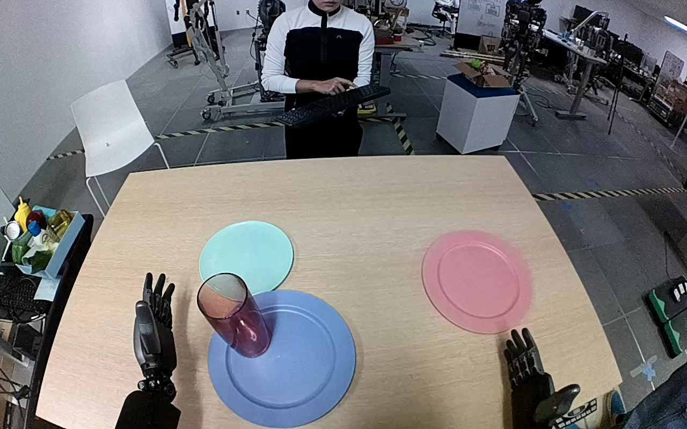

NVIDIA GR1 · 77
Video 77

Visual review action_review.json
{
"prompt_protocol": "humanoid_action_v1",
"prompt_provenance": "visually_authored_from_video_and_initial_frame",
"reviewed_contact_sheets": [
"sheet_001.jpg"
],
"inspected_frame_stride": 2,
"inspected_sampled_frame_count": 60,
"initial_scene": "Robot-mounted forward/downward view over both forearms and dexterous hands. A red translucent cylindrical tumbler stands on the blue plate near the robot; an empty pale turquoise plate is immediately beyond it, and an unused pink plate is to the right. A person beyond the table holds a keyboard and does not touch the manipulated objects.",
"observed_sequence": [
{
"start_frame": 0,
"end_frame": 30,
"action": "Both hands remain open beside the plates; tumbler stands on the blue plate.",
"confidence": "high"
},
{
"start_frame": 31,
"end_frame": 48,
"action": "Left forearm advances; left fingers approach the tumbler side and curl around it, briefly changing the tumbler orientation while its base remains over the blue plate. Right hand stays clear.",
"confidence": "high"
},
{
"start_frame": 49,
"end_frame": 68,
"action": "Left hand establishes a wrap grasp around the tumbler sides with opposed thumb and fingers, then begins lifting it upright away from the blue plate.",
"confidence": "high"
},
{
"start_frame": 69,
"end_frame": 84,
"action": "Left hand lifts and transports the upright tumbler forward toward the pale turquoise plate; the blue plate is left empty.",
"confidence": "high"
},
{
"start_frame": 85,
"end_frame": 104,
"action": "Left hand lowers the tumbler onto the pale turquoise plate and holds it upright while settling its base.",
"confidence": "high"
},
{
"start_frame": 105,
"end_frame": 119,
"action": "Left fingers open and move clear of the tumbler. The left hand withdraws to its left; tumbler remains standing upright on the pale turquoise plate. Right hand remains uninvolved.",
"confidence": "high"
}
],
"arm_hand_roles": {
"left": "Sole manipulating hand: wraps thumb/fingers around tumbler, lifts, carries, lowers, releases and withdraws.",
"right": "Remains open near the lower-right side of the table without contacting the tumbler or supporting the left hand.",
"coordination": "No two-hand manipulation or hand-to-hand transfer. The person across the table does not participate in object manipulation."
},
"anatomical_side_evidence": {
"description": "The camera looks forward from behind/above the robot forearms, rather than facing the robot. Both arms emerge toward the table from the lower corners in the initial PNG; the active forearm is continuous with the robot left-side wrist and hand. The hands are open with palms turned toward the view: the active hand thumb is on its outer left side and the opposite hand thumb on its outer right, consistent with anatomical left and right in this egocentric orientation. The grasp brings the active thumb across the tumbler near side opposite the fingers. Original left-hand annotation corroborates, but does not substitute for this visible handedness evidence.",
"confidence": "high",
"limitations": "Shoulders and torso are outside the view; handedness is established from the paired forearms, hand morphology, and camera orientation."
},
"uncertainties": [
"The transparent red vessel material cannot be established visually; the prompt uses tumbler rather than asserting glass material. Exact base contact is partly occluded by the left hand during lowering, but its independent standing state after withdrawal is visible."
],
"annotation_discrepancies": [],
"evidence_frame_indices": [
0,
38,
48,
64,
80,
98,
110,
119
],
"selected_execution_status": "success",
"inspection_coverage": {
"contact_sheet": "All 60 even-numbered sampled frames from 0 through 118 viewed on sheet_001.jpg.",
"native_frames": [
38,
48,
64,
80,
98,
110,
119
],
"initial_png": "Source initial PNG inspected at 1280x800 native resolution.",
"full_sequence": "Complete 120-frame source retained; no trim, crop, resize or re-encoding."
},
"terminal_state": "At frame 119 the red translucent tumbler stands upright on the pale turquoise plate after the open left hand has withdrawn clear; blue plate is empty and right hand has not participated.",
"video_id": "77",
"dataset": "NVIDIA_GR1_100",
"dedicated_review_agent": "review_gr1_77",
"review_source_video": "NVIDIA_GR1_100/77/original/original.mp4",
"source_frame_count": 120,
"source_fps": 20.0,
"native_detail_frames": [
38,
48,
64,
80,
98,
110,
119
],
"world_model_prompt": "The robot uses its left hand to grasp the red translucent tumbler around its sides, lift it from the blue plate, and carry it to the pale turquoise plate just beyond it. It lowers the tumbler upright onto that plate, opens its fingers, and withdraws the hand, leaving the tumbler standing on the plate. Keep the camera fixed; preserve robot geometry, physically valid joint motion, and normal gripper opening and closing.",
"original_task_instruction": "Use the left hand to pick up red glass from baby blue plate to pale turquoise plate.",
"selected_segment": {
"start_frame": 0,
"end_frame_exclusive": 120,
"reason": "Complete original single-task reference; no cropping or trimming requested."
},
"source_video_sha256": "d442f756025e95d4742c5bd882e7326fb09745f546b9fdeb6c48e485902ce236",
"review_completed_at": "2026-10-13T18:32:12.192234+00:00"
}